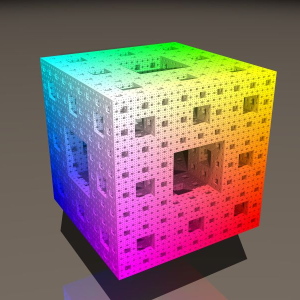
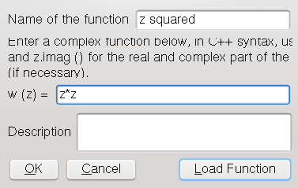
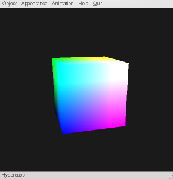

Object translation/rotation with the mouse and modifier keys
Just as you can define objects in three-dimensional space, you can define objects with four dimensions. And just as three-dimensional objects can be projected onto a plane, four-dimensional objects can be projected into three-space.
This program uses this approach to acquaint you with a couple of four-dimensional objects. Four-dimensional objects are projected to three dimensions, and then displayed on the computer monitor (after a further projection to two dimensions).
Every object thus has a is viewed from a viewpoint in four dimensions, as well as a viewpoint in three dimensions. That leaves freedom for plenty of viewing transformations. You can translate and rotate what is displayed in three and four dimensions, to get a better feeling for the objects and for four-space manipulations.
when you start this program, you will see nothing spectacular, just a colorful cube on the screen. The purpose of this document is to enable you to see what the four dimensional structure of this cube is, and to explore many other four dimensional objects.
The start window of Hyperspace Explorer
| LMB+left/right |
rotate about y-axis |
| LMB+up/down |
rotate about x-axis |
| LMB+MMB+up/down |
rotate about z-axis |
| MMB+left/right, CTRL+LMB+left/right |
translate along x-axis |
| MMB+up/down, CTRL+LMB+up/down |
translate along y-axis |
| LMB+MMB+left/right, CTRL+MMB+up/down |
translate along z-axis |
| CTRL+MMB+left/right |
translate along w-axis |
| SHIFT+LMB+left/right |
rotate about xy-plane ( = z-axis) |
| SHIFT+LMB+up/down |
rotate about xz-plane ( = y-axis) |
| SHIFT+MMB+up/down |
rotate about yz-plane ( = x-axis) |
| SHIFT+MMB+left/right |
rotate about xw-plane |
| SHIFT+RMB+left/right |
rotate about yw-plane |
| SHIFT+RMB+up/down |
rotate about zw-plane |
The "Object" submenu
You select the four-dimensional object to be displayed with the submenu titled "Object". There is a load of choices available.
The "f:R³->R" submenu
Under this menu you find a couple of three-dimensional "surspaces" in four-space (just as there are two-dimensional surfaces in three-space). These "surspaces" are described by functions of the type
x = (x, y, z, w)(up to now, only functions where w = f (r), r = sqrt (x²+y²+z²), are implemented)
where w = f (x, y, z)
and of the type
x = R·(sin (psi)·sin (theta)·cos (phi), sin (psi)·sin (theta)·sin (phi), sin (psi)·cos (theta), cos (psi))
where R = f (x, y, z),in other words, four-dimensional polar functions.
The "Objects" submenu
Under this menu you find some four-dimensional objects. These objects are generalizations of real objects from three-space, such as the cube, the sphere or the tetrahedron.
Hypersphere: The four-dimensional version of a circle or sphere, an object with a surface (or "surspace") which is the same distance from the center in every point.
Hypercube: The four-dimensional version of a cube. In 4D it has eight "surspaces", each consisting of a cube.
Hyperpyramid: The four-dimensional version of a tetrahedron or four-sided pyramid. In 4D it has five "surspaces", each consisting of a tetrahedron.
Menger Sponge: The four-dimensional relative of a Menger sponge.
If you do not know what a Menger sponge is: A Menger sponge is a fractal created by the following process.
You take a cube and slice it into 27 (3x3x3) small cubes.
Then you remove all subcubes which do not have an edge in common with the original cube. In effect, you remove the cross-shaped interior of the cube.
Then you go ahead with this operation for all the subcubes which have remained.
And so on, ad infinitum.
To the four-dimensional Menger sponge there are three parameters:
A three-dimensional Menger sponge
Sierpinski Gasket: The four-dimensional relative of a Sierpinski Gasket.
- The level of the sponge, i.e. the number of times the described process is repeated. For an actual fractal, the number would be infinite. That, of course, cannot be done in our less-than-ideal, CPU- and RAM-bound world. Do not set this above 3, unless you have a huge machine and/or know exactly, what you're doing. This number is of course an integer.
- The distance from the center, up to which hypercubes are taken out of the surrounding cube. If you set this to 1, you get something like a foam. At 2, you get the four-dimensional equivalent of the sponge depicted and described above. Set to three, you get something like dust, with the subcubes disconnected from each other.
For higher values of distance, you can choose higher values of the level too, before your computer gives up.
- The size of the object.
A Sierpinski gasket is similar in concept to a Menger sponge, but it takes a tetrahedron as a basis.
The four-dimensional Sierpinski gasket takes two parameters:
- The level, defined as in the Menger sponge. With Sierpinski gaskets, you can go a little higher on this, up to 6, say.
- The size of the object.
Torus 1: There is more than one way to generalize a torus from three to four dimensions. In three dimensions, you create a torus by taking a circle with radius r, and rotating it around another center, in a second circle with radius R.
This generalization to four-space takes a circle of radius rho, rotates it about a centre with a distance of r (defining a torus in three dimensions), and rotates that about a centre in the distance R.
Torus 2: This 4-torus is defined by rotating a sphere of radius r about a centre in distance R.
The "Surfaces" submenu
Under this menu you find a couple of two-dimensional surfaces in four-space, which are described by functions of the type
x = x (u, v) and
x = x (theta, phi).
Custom Functions

The "Appearance" submenu
Colors
Coloration can be switched on or off. You usually want colors, as they greatly aid you eye in understanding the spatial properties of the displayed object. Turning off colors gives a slight performance advantage. Colors are enabled by default.
Shading
Shading means the smooth coloration from one point of the object to another. You almost certainly want this, as everything looks awful without it. Turning off shading gives a slight performance advantage. Shading is enabled by default.
Depth Cue
Depth cue, also called fog, paints points which are further away from the viewer in three-dimensional space darker. This greatly helps you to understand the three-dimensional properties of an object. Turning it off gives a slight performance advantage. Depth cue is enabled by default.
Depth cue on

Depth cue off4D Depth Cue
4D depth cue is the four-dimensional analogon to Depth cue, painting points which are further away in four-space darker. Turning it off gives a moderate performance advantage. It is disabled by default.Transparence / Line Antialiasing
Transparence is used when you view a solid object, Line AA is used when viewing an object in wireframe. This makes an object look smoother and thus "better". Turning it on incurs a huge performance hit, so it is disabled by default.
Lighting
You can't turn off lighting, because without it everything would look just flat and white. I don't even know why I left this menu point.
Wireframe / Solid
You can switch between wireframe display and solid display of an object. The default is solid.
The Hypercube displayed as wireframe
Coordinate Cross
You can display a coordinate cross to aid you in distinguishing which direction is which axis. The x-axis is colored red, the y-axis green, the z-axis blue and the w-axis purple.
The coordinate cross
The "Animation" submenu
Render to Images
TBD. Don't use it yet.
Benchmark
Okay, this menu point is somewhat of a misnomer. What it does is rotating the current object in the current display space first in four-space, then in three-space, and then gives you the time it took and the framerate for each.
Warning: this is not interruptible,and it may take quite a while, depending on the object you display,the"Appearance" options you enabled, and your hardware!
Settings
TBD.
The "Help" submenu
Online Help
Obviously, you already found out what this item is for.
About
Information about Hyperspace Explorer
About Qt
Information about Qt, the toolkit heavily used to program Hyperspace Explorer
Quit
Exits the program, no questions asked.
Notice that while changes on the "Grid Size and Bounds" part of the window take effect immediately after you pressed the "Apply" button, changes in the "Function and Parameters" part do not. In that case, you first have to (re-)select the object or function you are setting the parameters for.Grid Size and Bounds
You can enter the roughness of the grid at which the function values are sampled. By default, functions are displayed on a 5x5x5 grid, which is very inaccurate and looks rough. The drawback of a higher resolution is, that the number of points sampled scales with the cube of the grid size, so that for a grid that is twice as large, you'll have eight times as many points as before, and the performance drops to one eigth.
The bounds span the parameter space for the given function.
For objects you find under the submenu "f:R³->R" you can specify the grid in three dimensions (t, u, v), for objects from the submenu "Surfaces" you need two (u and v), for objects from the submenu "Objects" you need none, as these are not sampled on a grid.
Function and Parameters
TBD.